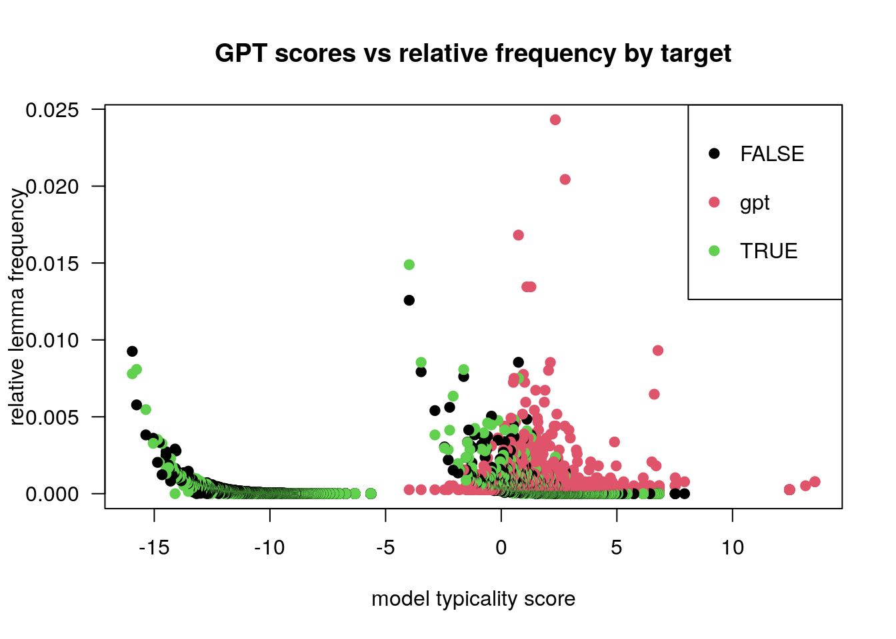
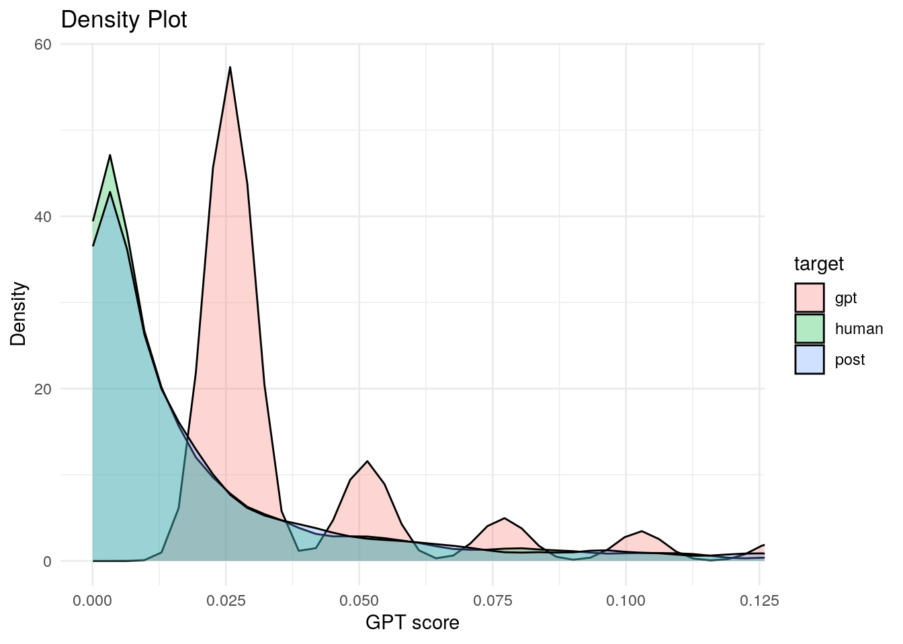
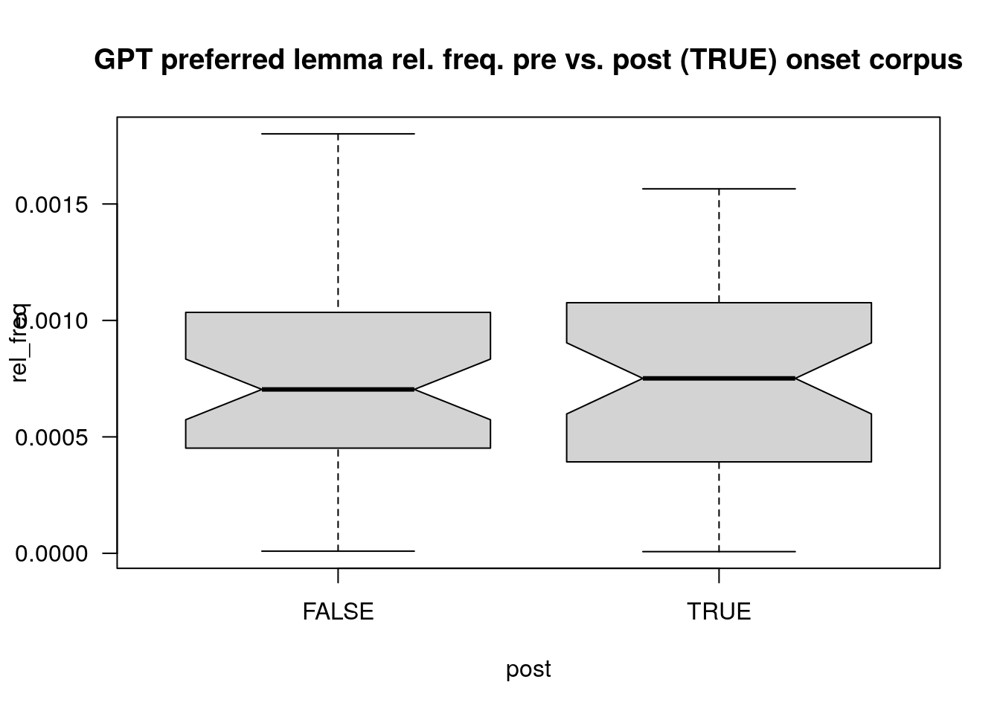

[1] "System prompt: "
[2] "You are a member of german parliament. Prepare a summary of the text provided to present at a local community meeting of your party members. Output in german language, no preamble, no extra information, just the plain text. Wordcount maximal 300 words, containing not more than 5% of the keywords of the text provided and explicitly not just a list of keywords but an entertaining text. You are supposed to interprete freely, including background insights on daily politics. Keep in mind thatthe text will be used as is as keynotes to the talk being held to the locals. "
[3] "Text:" gemini paper
1 index
2 the einleitung
inspired by the paper Empirical evidence of Large Language Model’s influence on human spoken communication, Yakura et al. (2025), who indeed found (evidence) for GPT influenced human language after the introduction of chatGPT we tried to replicate the pipeline of building an AI vocabulary (gpt preferred lemmata) and compare frequencies of gpt-typical words across pre- and post chatGPT human language corpora. The first draft essai proves their hypothesis that LLM generated language manifests within human natural language.
the embedding of that investigation into the context of the class subject germanische sprachen im vergleich is still due; first idea is the projection of the Yakura et al. (2025) findings onto a german language corpus and see if these are still valid although that may rather be a pragmatics investigation.
2.1 preliminary
Our findings are still limited to a yet very small corpus of texts after the introduction of the google gemini chat agent to the german public in 03/2024, cf. Wikipedia and Google (2026). In contrast to Yakura et al. (2025) and out of resources considerations we decided for gemini as basis for our AI generated vocabulary and for another text corpus (german bundestag plenary protocols, DIP (2026)) than youtube/podcast audio for the same reasons. That limits our post-AI corpus to a small timeframe between 03/2024 up to now. With expanding that corpus to a wider spectrum with including other sources we may harden our results.
3 hypothesis
following Yakura et al. (2025) we assumed that the consuming of LLM generated language influences the human production of language such that vocabulary typical for LLM output will be found with higher frequencies in human language corpora dating after chat agent introduction.
4 methods
4.1 snc
16062.1.2.16063.1
please cf. Schwarz (2026) for the corpus building and evaluation script (still messy.)
4.2 data
our human langugae data consists of raw texts from german bundestag plenary protocols (DIP (2026)). the LLM corpus consists of model summaries of a first subset of these texts generated with the following prompt: Section 4.2.2.
4.2.1 corpus subsets
| target | tokens |
|---|---|
| gemini | 3895 |
| human-pre | 1437497 |
| human-post | 1363467 |
4.2.2 gemini prompt
4.3 computation
we first devised AI-typical lemmata in the model corpus which are distinctive for that corpus using a linear regression model (R, package lme4::glmer(): Bates et al. (2015)) that calculates a score for each lemma in the corpus, see Figure 1 and Figure 2.


5 evaluation
5.1 basic descriptive
to first gather an insight, yet with simple descriptive stats comparing the raw frequencies of gpt-preferred lemmas in pre- and post-gemini onset we find that in the target corpus the occurences of these lemma increase, only by small amount (see Table 1) and hard to visualise (see Figure 3). if these findings become relevant, we’ll see in Section 5.3 where we evaluate the frequencies with a linear regression model.
| target | freq |
|---|---|
| human | 0.3708 |
| post | 0.3890 |
| DIFF: | 0.0182 |

5.2 responsible lemmata
selection of first 20 lemma that are responsible for the increase of frequency in general.
this list is still in progress since bit complicated to sync descriptive lemma list with the linear model list derived, which looks more realistic for a gpt output but with lot of rubbish in it due to mislemmatization.
5.2.1 lemma descriptive output
[1] müssen deutschland menschen liebe
[5] stehen mehr sagen einsetzen
[9] herausforderungen wichtig aktuell interessen
[13] partei wichtiger arbeiten arbeitsplätze
[17] berlin bleiben bürger bürgerinnen
348 Levels: abgeordnete aktiv aktuell alice all alltag ... zusammenhalt5.2.2 lemma linear model output
[1] "abschlussrede" "adherehen"
[3] "constraints" "designed"
[5] "engagehen" "ganztagsbetreuungsplätzen"
[7] "geburtstagskinder" "gegenliebe"
[9] "here's" "krämerladen"
[11] "mammutsitzung" "meetehen"
[13] "mitgemischen" "parlamentariers"
[15] "parlamentspartei" "rumgeschrauben"
[17] "schlüsselwörter" "specific"
[19] "summary" "tailored" 5.3 linear regression
to prove descriptive results, we compute the stability of the frequency increase for target- vs. reference corpus with a linear regression model using R’s lme4::lmer() function, cf. Bates et al. (2015). coefficents are printed below, where frequency are the relative lemma frequencies over corpus; target defines reference resp. target corpus[post-gpt] (human/post) and in.gpt as numerical variable representing the gpt-score of the corresponding lemma i.e. wether it scores high (positive values) or low (negative values) in terms of being preferredly used by the chat agent.
5.3.1 basic (lm)
formula: frequency.relative ~ target * in.gpt
Call:
lm(formula = f.rel ~ target * in.gp, data = lmdf.c)
Residuals:
Min 1Q Median 3Q Max
-0.04285 -0.00099 -0.00099 -0.00077 1.57754
Coefficients:
Estimate Std. Error t value Pr(>|t|)
(Intercept) 1.061e-03 5.421e-05 19.570 < 2e-16 ***
targetall 5.864e-06 7.666e-05 0.077 0.9390
targetgpt 6.128e-02 1.370e-03 44.733 < 2e-16 ***
targetpost 9.944e-05 7.899e-05 1.259 0.2081
in.gp 2.535e-03 6.791e-05 37.333 < 2e-16 ***
targetall:in.gp -2.157e-04 9.387e-05 -2.298 0.0215 *
targetgpt:in.gp -1.922e-03 2.404e-04 -7.996 1.30e-15 ***
targetpost:in.gp 3.859e-04 9.731e-05 3.965 7.33e-05 ***
---
Signif. codes: 0 '***' 0.001 '**' 0.01 '*' 0.05 '.' 0.1 ' ' 1
Residual standard error: 0.0149 on 223173 degrees of freedom
Multiple R-squared: 0.1278, Adjusted R-squared: 0.1278
F-statistic: 4672 on 7 and 223173 DF, p-value: < 2.2e-165.3.2 mixed effects model (lmer)
formula: frequency.relative ~ target * in.gpt +(1|lemma)
Linear mixed model fit by REML. t-tests use Satterthwaite's method [
lmerModLmerTest]
Formula: f.rel ~ target * in.gp + (1 | lemma)
Data: lmdf.c
REML criterion at convergence: -1319734
Scaled residuals:
Min 1Q Median 3Q Max
-70.063 -0.031 -0.028 -0.017 115.436
Random effects:
Groups Name Variance Std.Dev.
lemma (Intercept) 8.870e-05 0.009418
Residual 9.543e-05 0.009769
Number of obs: 223181, groups: lemma, 110393
Fixed effects:
Estimate Std. Error df t value Pr(>|t|)
(Intercept) 9.193e-04 4.795e-05 2.101e+05 19.171 < 2e-16 ***
targetall -5.765e-06 5.026e-05 1.447e+05 -0.115 0.9087
targetgpt -1.781e-02 1.015e-03 1.676e+05 -17.535 < 2e-16 ***
targetpost -3.930e-05 5.911e-05 1.937e+05 -0.665 0.5061
in.gp 2.216e-03 6.094e-05 1.992e+05 36.359 < 2e-16 ***
targetall:in.gp 1.262e-04 6.200e-05 1.463e+05 2.035 0.0419 *
targetgpt:in.gp 1.096e-02 1.772e-04 1.672e+05 61.847 < 2e-16 ***
targetpost:in.gp 2.781e-04 6.444e-05 1.469e+05 4.315 1.6e-05 ***
---
Signif. codes: 0 '***' 0.001 '**' 0.01 '*' 0.05 '.' 0.1 ' ' 1
Correlation of Fixed Effects:
(Intr) trgtll trgtgp trgtps in.gp trgtl:. trgtg:.
targetall -0.524
targetgpt -0.028 0.026
targetpost -0.585 0.425 0.027
in.gp -0.118 0.063 0.034 0.070
trgtll:n.gp 0.065 -0.121 -0.034 -0.053 -0.540
trgtgpt:n.g 0.025 -0.023 -0.938 -0.023 -0.218 0.214
trgtpst:n.g 0.082 -0.059 -0.003 -0.140 -0.512 0.501 0.175 5.3.2.1 helper interpretation, to be tested
the coefficients interesting for us are the in.gp and targetpost:in.gp estimates. here we test the association between the gpt score of a lemma and its estimated frequency and its showing that a general increase of frequency is estimated if the score rises (=the lemma is within the lemmas preferred used by gemini) and that for the post-gpt corpus this increase (30.25027%) is significant (and not random in data).
in the fixed effects correlation output of the lmer() model we see that the gpt score correlates with the target corpus frequency for lemma by 0.0695357.
5.3.3 anova of mixed effects model [out]
6 references
Bates, Douglas, Martin Mächler, Ben Bolker, and Steve Walker. 2015. “Fitting Linear Mixed-Effects Models Using Lme4.” Journal of Statistical Software 67 (1): 1–48. https://doi.org/10.18637/jss.v067.i01.
DIP. 2026. “DIP - Bundestagsprotokolle.” Docs. DIP - API. Berlin. https://dip.bundestag.de/%C3%BCber-dip/hilfe/api#content.
Schwarz, St. 2026. “This Papers Evaluation Script.” GitHub/Esteeschwarz. Berlin. https://github.com/esteeschwarz/SPUND-LX/blob/main/germanic/HA/LLM-003.R.
Wikipedia, and Google. 2026. “Google Gemini.” Wikipedia. https://de.wikipedia.org/w/index.php?title=Google_Gemini&oldid=263426206.
Yakura, Hiromu, Ezequiel Lopez-Lopez, Levin Brinkmann, Ignacio Serna, Prateek Gupta, Ivan Soraperra, and Iyad Rahwan. 2025. “Empirical Evidence of Large Language Model’s Influence on Human Spoken Communication.” arXiv. https://doi.org/10.48550/arXiv.2409.01754.